CODING AGENTS AS PIXEL WORLD MODELS
traex/DeepSeek-V4.1-Flash · mechanics_0029
点击播放 · 原生 RGB 像素
逐轮保存的候选
回放视频、检查图与代码变化。
每份候选均可单独播放。实际图片检查记录在下方工具轨迹中。
候选 01播放与检查图
点击播放 · 原生 RGB 像素
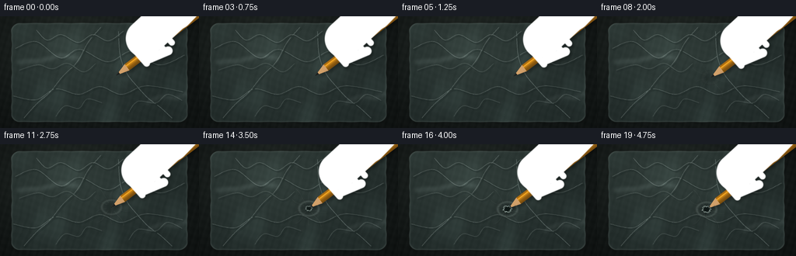
展开代码变化
--- 上一保存版本
+++ 本次保存版本
@@ -0,0 +1,639 @@
+"""Procedurally render a pencil puncturing a thin plastic bag."""
+
+from __future__ import annotations
+
+import math
+from pathlib import Path
+
+import numpy as np
+from PIL import Image, ImageDraw, ImageFilter
+
+from artifact_io import save
+
+
+WIDTH = 256
+HEIGHT = 144
+FRAMES = 20
+FPS = 4.0
+SS = 4
+HW = WIDTH * SS
+HH = HEIGHT * SS
+
+ROOT = Path(__file__).resolve().parent
+
+
+def smoothstep(edge0: float, edge1: float, value: float | np.ndarray):
+ t = np.clip((value - edge0) / (edge1 - edge0), 0.0, 1.0)
+ return t * t * (3.0 - 2.0 * t)
+
+
+def mix(a, b, t):
+ return a * (1.0 - t) + b * t
+
+
+def rgb(values):
+ return np.asarray(values, dtype=np.float32)
+
+
+def rgba(values, alpha=1.0):
+ return (*values, alpha)
+
+
+def to_image(array):
+ return Image.fromarray(np.clip(array * 255.0 + 0.5, 0, 255).astype(np.uint8), "RGB")
+
+
+def blur_mask(mask, radius):
+ image = Image.fromarray(np.clip(mask * 255.0 + 0.5, 0, 255).astype(np.uint8), "L")
+ image = image.filter(ImageFilter.GaussianBlur(radius))
+ return np.asarray(image, dtype=np.float32) / 255.0
+
+
+def shift_array(array, dx, dy):
+ """Shift an array by integer pixels while keeping its original shape."""
+ out = np.zeros_like(array)
+ src_x0 = max(0, -dx)
+ src_x1 = min(array.shape[1], array.shape[1] - dx)
+ src_y0 = max(0, -dy)
+ src_y1 = min(array.shape[0], array.shape[0] - dy)
+ if src_x0 < src_x1 and src_y0 < src_y1:
+ out[src_y0 + dy : src_y1 + dy, src_x0 + dx : src_x1 + dx] = array[
+ src_y0:src_y1, src_x0:src_x1
+ ]
+ return out
+
+
+def alpha_over(base: Image.Image, color, alpha) -> Image.Image:
+ alpha_array = np.clip(alpha, 0.0, 1.0)
+ color_array = np.empty((HH, HW, 4), dtype=np.uint8)
+ color_array[..., :3] = np.asarray(np.clip(rgb(color) * 255.0, 0, 255), dtype=np.uint8)
+ color_array[..., 3] = np.asarray(alpha_array * 255.0, dtype=np.uint8)
+ return Image.alpha_composite(base, Image.fromarray(color_array, "RGBA"))
+
+
+def bezier(p0, p1, p2, p3, count=120):
+ points = []
+ for t in np.linspace(0.0, 1.0, count):
+ omt = 1.0 - t
+ x = omt**3 * p0[0] + 3 * omt**2 * t * p1[0] + 3 * omt * t**2 * p2[0] + t**3 * p3[0]
+ y = omt**3 * p0[1] + 3 * omt**2 * t * p1[1] + 3 * omt * t**2 * p2[1] + t**3 * p3[1]
+ points.append((x * SS, y * SS))
+ return points
+
+
+def smooth_polyline(points, samples_per_segment=24):
+ """Sample a Catmull-Rom curve through an arbitrary number of control points."""
+ points = [np.asarray(point, dtype=np.float64) for point in points]
+ padded = [points[0]] + points + [points[-1]]
+ curve = []
+ for index in range(1, len(padded) - 2):
+ p0, p1, p2, p3 = padded[index - 1 : index + 3]
+ for t in np.linspace(0.0, 1.0, samples_per_segment, endpoint=False):
+ t2 = t * t
+ t3 = t2 * t
+ point = 0.5 * (
+ 2.0 * p1
+ + (-p0 + p2) * t
+ + (2.0 * p0 - 5.0 * p1 + 4.0 * p2 - p3) * t2
+ + (-p0 + 3.0 * p1 - 3.0 * p2 + p3) * t3
+ )
+ curve.append((point[0] * SS, point[1] * SS))
+ return curve
+
+
+def rounded_rect_mask(xx, yy, cx, cy, half_w, half_h, radius):
+ qx = np.abs(xx - cx) - (half_w - radius)
+ qy = np.abs(yy - cy) - (half_h - radius)
+ outside = np.sqrt(np.maximum(qx, 0.0) ** 2 + np.maximum(qy, 0.0) ** 2)
+ sdf = outside + np.minimum(np.maximum(qx, qy), 0.0) - radius
+ return sdf
+
+
+def segment_distance(xx, yy, p0, p1):
+ vx = p1[0] - p0[0]
+ vy = p1[1] - p0[1]
+ length2 = vx * vx + vy * vy
+ t = ((xx - p0[0]) * vx + (yy - p0[1]) * vy) / length2
+ t = np.clip(t, 0.0, 1.0)
+ dx = xx - (p0[0] + t * vx)
+ dy = yy - (p0[1] + t * vy)
+ return np.sqrt(dx * dx + dy * dy), t
+
+
+def capsule_mask(xx, yy, p0, p1, radius):
+ distance, _ = segment_distance(xx, yy, p0, p1)
+ return np.clip((radius - distance) * SS + 0.5, 0.0, 1.0)
+
+
+def ellipse_mask(xx, yy, center, radius_x, radius_y, angle):
+ ca = math.cos(angle)
+ sa = math.sin(angle)
+ dx = xx - center[0]
+ dy = yy - center[1]
+ u = (dx * ca + dy * sa) / radius_x
+ v = (-dx * sa + dy * ca) / radius_y
+ return np.clip((1.0 - np.sqrt(u * u + v * v)) * min(radius_x, radius_y) * SS + 0.5, 0.0, 1.0)
+
+
+def make_grid():
+ yy, xx = np.mgrid[0:HH, 0:HW].astype(np.float32)
+ return xx / SS, yy / SS
+
+
+def build_background(xx, yy):
+ """Dark green-gray tabletop with a soft pool of light from the upper left."""
+ base = np.empty((HH, HW, 3), dtype=np.float32)
+ dark = rgb([0.055, 0.071, 0.069])
+ mid = rgb([0.145, 0.172, 0.158])
+ light = np.exp(-(((xx - 88.0) / 160.0) ** 2 + ((yy - 27.0) / 110.0) ** 2) * 1.8)
+ base[:] = mix(dark, mid, (0.18 + 0.65 * light)[..., None])
+
+ # Fine table grain and a restrained lower vignette.
+ grain = (
+ 0.006 * np.sin(xx * 0.72 + yy * 0.19)
+ + 0.004 * np.sin(xx * 0.23 - yy * 0.61 + 1.7)
+ + 0.0025 * np.sin(xx * 1.31 + yy * 0.44)
+ )
+ vignette = np.clip(1.0 - 0.22 * (((xx - 128.0) / 155.0) ** 2 + ((yy - 72.0) / 95.0) ** 2), 0.65, 1.0)
+ base *= vignette[..., None]
+ base += grain[..., None]
+ return np.clip(base, 0.0, 1.0)
+
+
+def bag_geometry(xx, yy):
+ cx, cy = 128.0, 72.5
+ half_w, half_h, radius = 113.0, 64.0, 10.0
+ # A tiny edge wobble keeps the bag from looking like a perfect UI rectangle.
+ wobble = (
+ 0.34 * np.sin(yy * 0.19 + 0.7)
+ + 0.20 * np.sin(yy * 0.51 + 2.1)
+ + 0.18 * np.sin(xx * 0.21 + 1.4)
+ )
+ sdf = rounded_rect_mask(xx, yy, cx, cy, half_w, half_h, radius) + wobble
+ mask = np.clip(0.5 - sdf * SS, 0.0, 1.0)
+ return sdf, mask
+
+
+def add_bag(base, xx, yy):
+ """Apply translucent film, refraction, edge seams, and plastic glints."""
+ sdf, mask = bag_geometry(xx, yy)
+
+ # Gentle refraction across the loose sheet.
+ dx = 1.20 * np.sin(yy * 0.105 + 0.7 * np.sin(xx * 0.038)) + 0.45 * np.sin(yy * 0.31 + 1.2)
+ dy = 0.70 * np.sin(xx * 0.093 - 0.5) + 0.35 * np.sin(xx * 0.23 + yy * 0.07)
+ xi = np.clip(np.rint(np.arange(HW)[None, :] + dx * SS).astype(np.int32), 0, HW - 1)
+ yi = np.clip(np.rint(np.arange(HH)[:, None] + dy * SS).astype(np.int32), 0, HH - 1)
+ warped = base[yi, xi]
+
+ film_tint = rgb([0.50, 0.58, 0.565])
+ film = mix(warped, film_tint, 0.105)
+ film += rgb([0.025, 0.042, 0.040]) * mask[..., None]
+
+ # Broad, low-contrast reflected light along the folds.
+ sheen = (
+ 0.032 * np.sin(xx * 0.075 + yy * 0.025 + 0.4)
+ + 0.020 * np.sin(xx * 0.031 - yy * 0.085 + 2.2)
+ + 0.013 * np.sin(xx * 0.19 + yy * 0.05)
+ )
+ sheen = np.maximum(sheen, 0.0) * mask
+ film += sheen[..., None] * rgb([0.72, 0.90, 0.85])
+ base = mix(base, film, mask[..., None] * 0.92)
+
+ # Dark outer contact and a crisp inner seam.
+ mask_img = Image.fromarray((mask * 255.0).astype(np.uint8), "L")
+ eroded = np.asarray(mask_img.filter(ImageFilter.MinFilter(7)), dtype=np.float32) / 255.0
+ dilated = np.asarray(mask_img.filter(ImageFilter.MaxFilter(9)), dtype=np.float32) / 255.0
+ edge = np.clip(mask - eroded, 0.0, 1.0)
+ outside = np.clip(dilated - mask, 0.0, 1.0)
+ outside = blur_mask(outside, 1.4 * SS)
+ edge_soft = blur_mask(edge, 0.45 * SS)
+ base *= (1.0 - 0.18 * outside)[..., None]
+ base = mix(base, rgb([0.73, 0.81, 0.78]), 0.20 * edge_soft[..., None])
+
+ # A faint heat-sealed perimeter and small crimp marks.
+ seam = np.clip(1.0 - np.abs(sdf + 2.0) * SS, 0.0, 1.0) * mask
+ base = mix(base, rgb([0.61, 0.69, 0.66]), 0.10 * seam[..., None])
+ return base, mask, sdf
+
+
+def crease_layer():
+ layer = Image.new("RGBA", (HW, HH), (0, 0, 0, 0))
+ draw = ImageDraw.Draw(layer)
+
+ creases = [
+ ((20, 42), (47, 33), (78, 54), (103, 43), (139, 59), (171, 45), (205, 63), (239, 50)),
+ ((17, 103), (47, 108), (72, 94), (102, 101), (129, 91), (157, 101), (189, 90), (237, 98)),
+ ((31, 132), (48, 113), (65, 98), (82, 77), (100, 59), (114, 34), (131, 14)),
+ ((222, 132), (208, 119), (192, 107), (177, 91), (163, 73), (155, 50), (153, 19)),
+ ((47, 18), (61, 31), (79, 24), (101, 34), (120, 24), (140, 32), (160, 19)),
+ ((25, 70), (49, 63), (68, 68), (87, 61), (108, 72), (124, 61)),
+ ((166, 124), (178, 110), (201, 112), (216, 101), (235, 109)),
+ ((72, 130), (84, 116), (102, 119), (113, 107), (132, 112)),
+ ]
+
+ for index, pts in enumerate(creases):
+ curve = smooth_polyline(pts)
+ strong = 1.0 if index < 5 else 0.72
+ draw.line([(x + 1.0 * SS, y + 1.3 * SS) for x, y in curve], fill=(16, 27, 26, int(48 * strong)), width=int(2.1 * SS), joint="curve")
+ draw.line([(x - 0.45 * SS, y - 0.55 * SS) for x, y in curve], fill=(222, 239, 233, int(68 * strong)), width=int(1.0 * SS), joint="curve")
+
+ # Loose secondary scratches catch the light without reading as fabric.
+ secondary = [
+ ((38, 58), (65, 54), (84, 61), (110, 55)),
+ ((129, 118), (149, 112), (173, 118), (196, 108)),
+ ((198, 73), (213, 79), (225, 73), (239, 77)),
+ ((44, 87), (62, 81), (81, 86), (98, 79)),
+ ((116, 37), (123, 48), (119, 58), (128, 67)),
+ ]
+ for pts in secondary:
+ curve = bezier(pts[0], pts[1], pts[2], pts[3])
+ draw.line([(x * SS, y * SS) for x, y in curve], fill=(228, 243, 238, 38), width=max(1, int(0.55 * SS)))
+
+ # Wide folded glints.
+ glint = Image.new("RGBA", (HW, HH), (0, 0, 0, 0))
+ gdraw = ImageDraw.Draw(glint)
+ gdraw.line([(21 * SS, 59 * SS), (53 * SS, 57 * SS), (78 * SS, 50 * SS), (104 * SS, 54 * SS)], fill=(210, 235, 229, 24), width=9 * SS, joint="curve")
+ gdraw.line([(186 * SS, 113 * SS), (205 * SS, 103 * SS), (226 * SS, 106 * SS), (242 * SS, 98 * SS)], fill=(224, 241, 236, 18), width=7 * SS, joint="curve")
+ glint = glint.filter(ImageFilter.GaussianBlur(2.4 * SS))
+ layer = Image.alpha_composite(glint, layer)
+ layer = layer.filter(ImageFilter.GaussianBlur(0.28 * SS))
+ return layer
+
+
+def add_surface_noise(image, mask, seed=11):
+ rng = np.random.default_rng(seed)
+ noise = rng.normal(0.0, 1.0, (HH // 4, HW // 4)).astype(np.float32)
+ noise = np.asarray(
+ Image.fromarray(np.clip((noise * 24.0 + 128.0), 0, 255).astype(np.uint8), "L").resize(
+ (HW, HH), Image.Resampling.BICUBIC
+ ).filter(ImageFilter.GaussianBlur(0.5 * SS)),
+ dtype=np.float32,
+ ) / 255.0 - 0.5
+ array = np.asarray(image, dtype=np.float32) / 255.0
+ array += (noise * 0.020 * mask)[..., None]
+ return to_image(array)
+
+
+def tip_position(frame_index):
+ t = frame_index / (FRAMES - 1)
+ ease = smoothstep(0.05, 0.92, t)
+ tx = 149.0 - 8.3 * ease + 0.35 * math.sin(t * math.pi * 2.2)
+ ty = 76.2 + 7.5 * ease + 0.20 * math.sin(t * math.pi * 2.0 + 0.8)
+ return tx, ty, t
+
+
+def contact_layers(frame_index, tip, xx, yy):
+ """Return bag stress, hole base, and torn-rim layers for one moment."""
+ tx, ty, t = tip
+ pressure = smoothstep(0.10, 0.62, t)
+ puncture = smoothstep(0.56, 0.86, t)
+ stretch = smoothstep(0.18, 0.68, t)
+ dx = xx - tx
+ dy = yy - ty
+
+ # Dimple, offset shadow, and a stretched, whitened shoulder.
+ rx = 6.0 + 5.2 * pressure
+ ry = 4.8 + 3.5 * pressure
+ q = np.sqrt((dx / rx) ** 2 + (dy / ry) ** 2)
+ dimple = np.exp(-(q / 1.02) ** 4) * (0.16 + 0.18 * pressure)
+ shoulder = np.exp(-((q - 1.12) / 0.23) ** 2) * stretch
+ shadow = np.exp(-(((dx - 1.7) / (rx * 0.80)) ** 2 + ((dy - 2.1) / (ry * 0.72)) ** 2)) * (0.18 + 0.16 * pressure)
+
+ stress_rgb = np.zeros((HH, HW, 3), dtype=np.float32)
+ stress_alpha = np.zeros((HH, HW), dtype=np.float32)
+ stress_rgb += rgb([0.80, 0.90, 0.86]) * (shoulder * 0.46)[..., None]
+ stress_alpha = np.maximum(stress_alpha, shoulder * 0.42)
+ stress_rgb += rgb([0.06, 0.10, 0.095]) * (dimple * 0.50)[..., None]
+ stress_alpha = np.maximum(stress_alpha, dimple * 0.48)
+ stress_rgb += rgb([0.03, 0.06, 0.055]) * (shadow * 0.55)[..., None]
+ stress_alpha = np.maximum(stress_alpha, shadow * 0.50)
+
+ stress = np.dstack([stress_rgb, stress_alpha[..., None]])
+ stress_image = Image.fromarray(np.clip(stress * 255.0, 0, 255).astype(np.uint8), "RGBA")
+
+ # Radial tension wrinkles become more pronounced as the point sinks.
+ wrinkles = Image.new("RGBA", (HW, HH), (0, 0, 0, 0))
+ draw = ImageDraw.Draw(wrinkles)
+ ray_specs = [
+ (-154.0, 25.0, 0.7, 0.50),
+ (-122.0, 31.0, -0.5, 0.75),
+ (-88.0, 22.0, 0.9, 0.45),
+ (-54.0, 27.0, -0.8, 0.58),
+ (-20.0, 18.0, 0.6, 0.34),
+ (16.0, 24.0, -0.6, 0.42),
+ (53.0, 29.0, 0.7, 0.66),
+ (91.0, 22.0, -0.4, 0.45),
+ (128.0, 27.0, 0.8, 0.60),
+ (164.0, 20.0, -0.7, 0.40),
+ ]
+ for angle_deg, length, bend, weight in ray_specs:
+ angle = math.radians(angle_deg)
+ start_r = 4.2 + 1.8 * pressure
+ p0 = (tx + math.cos(angle) * start_r, ty + math.sin(angle) * start_r)
+ p1 = (
+ tx + math.cos(angle + bend * 0.18) * length * 0.42,
+ ty + math.sin(angle + bend * 0.18) * length * 0.42,
+ )
+ p2 = (
+ tx + math.cos(angle - bend * 0.25) * length * 0.76,
+ ty + math.sin(angle - bend * 0.25) * length * 0.76,
+ )
+ p3 = (
+ tx + math.cos(angle + bend * 0.10) * length,
+ ty + math.sin(angle + bend * 0.10) * length,
+ )
+ curve = bezier(p0, p1, p2, p3, count=50)
+ a = int(np.clip((20 + 62 * stretch) * weight, 0, 95))
+ draw.line([(x + 0.9 * SS, y + 1.0 * SS) for x, y in curve], fill=(18, 31, 29, int(a * 0.48)), width=max(1, int(0.75 * SS)), joint="curve")
+ draw.line([(x - 0.25 * SS, y - 0.35 * SS) for x, y in curve], fill=(232, 246, 240, a), width=max(1, int(0.55 * SS)), joint="curve")
+ wrinkles = wrinkles.filter(ImageFilter.GaussianBlur(0.35 * SS))
+ stress_image = Image.alpha_composite(stress_image, wrinkles)
+
+ # Irregular opening and its thick, stretched lip.
+ hole_layer = Image.new("RGBA", (HW, HH), (0, 0, 0, 0))
+ hdraw = ImageDraw.Draw(hole_layer)
+ if puncture > 0.001:
+ radius = 0.9 + 3.2 * puncture
+ pts = []
+ for i in range(18):
+ angle = 2.0 * math.pi * i / 18.0
+ jitter = 1.0 + 0.16 * math.sin(i * 4.7 + 0.8) + 0.10 * math.sin(i * 2.1 + 2.0)
+ pts.append(((tx + math.cos(angle) * radius * jitter) * SS, (ty + math.sin(angle) * radius * 0.78 * jitter) * SS))
+ hdraw.polygon(pts, fill=(12, 20, 19, int(180 + 60 * puncture)))
+ rim_pts = []
+ for i in range(18):
+ angle = 2.0 * math.pi * i / 18.0
+ jitter = 1.0 + 0.19 * math.sin(i * 4.7 + 0.8) + 0.11 * math.sin(i * 2.1 + 2.0)
+ rim_pts.append(((tx + math.cos(angle) * (radius + 1.1) * jitter) * SS, (ty + math.sin(angle) * (radius + 1.1) * 0.80 * jitter) * SS))
+ hdraw.line(rim_pts + [rim_pts[0]], fill=(211, 234, 226, int(150 * puncture)), width=max(1, int(1.0 * SS)), joint="curve")
+ hdraw.line([((x + 0.6 * SS), (y + 0.8 * SS)) for x, y in rim_pts + [rim_pts[0]]], fill=(19, 31, 28, int(115 * puncture)), width=max(1, int(0.8 * SS)), joint="curve")
+ hole_layer = hole_layer.filter(ImageFilter.GaussianBlur(0.24 * SS))
+ return stress_image, hole_layer, pressure, puncture
+
+
+def pencil_axis(tip):
+ tx, ty = tip[0], tip[1]
+ u = np.array([0.798, -0.602], dtype=np.float32)
+ v = np.array([0.602, 0.798], dtype=np.float32)
+ return np.array([tx, ty], dtype=np.float32), u, v
+
+
+def pencil_mask(tip, visible_start=0.0):
+ tx, ty = tip[0], tip[1]
+ xx, yy = make_grid()
+ u = np.array([0.798, -0.602], dtype=np.float32)
+ v = np.array([0.602, 0.798], dtype=np.float32)
+ along = (xx - tx) * u[0] + (yy - ty) * u[1]
+ across = (xx - tx) * v[0] + (yy - ty) * v[1]
+ body_radius = 5.15
+ cone_length = 18.0
+ body = (along >= visible_start) & (along < 230.0) & (np.abs(across) <= body_radius)
+ cone_half = body_radius * np.clip((along - visible_start) / (cone_length - visible_start), 0.0, 1.0)
+ cone = (along >= visible_start) & (along <= cone_length) & (np.abs(across) <= cone_half)
+ return np.clip((body | cone).astype(np.float32), 0.0, 1.0)
+
+
+def hand_parts(tip):
+ tx, ty = tip[0], tip[1]
+ u = np.array([0.798, -0.602], dtype=np.float32)
+ v = np.array([0.602, 0.798], dtype=np.float32)
+ origin = np.array([tx, ty], dtype=np.float32)
+
+ def point(a, b):
+ return tuple((origin + u * a + v * b).tolist())
+
+ palm = (point(58, -16), point(119, -22), 24.0)
+ wrist = (point(111, -18), point(188, -30), 22.0)
+ fingers = []
+ for index, a in enumerate([40.0, 54.0, 68.0, 82.0]):
+ # Fingers curl from the back of the hand across the pencil.
+ p0 = point(a - 0.5, -10.5 + index * 0.4)
+ p1 = point(a + 1.1, 11.2 - index * 0.6)
+ fingers.append((p0, p1, 4.3 - index * 0.12, a))
+ thumb = (point(47, 8.5), point(73, 15.0), 5.7)
+ return palm, wrist, fingers, thumb, u, v, origin
+
+
+def shade_capsule(mask, color_base, color_shadow, light_strength=1.0):
+ """Build a softly shaded RGBA capsule from a hard coverage mask."""
+ soft = blur_mask(mask, 0.35 * SS)
+ edge = np.clip(mask - blur_mask(mask, 1.0 * SS), 0.0, 1.0)
+ edge = blur_mask(edge, 0.5 * SS)
+ color = np.broadcast_to(rgb(color_base), (HH, HW, 3)).copy()
+ color = mix(color, rgb(color_shadow), (0.22 * edge * light_strength)[..., None])
+ alpha = np.clip(soft, 0.0, 1.0)
+ return color, alpha
+
+
+def hand_layer(tip):
+ xx, yy = make_grid()
+ palm, wrist, fingers, thumb, u, v, origin = hand_parts(tip)
+ skin = rgb([0.73, 0.48, 0.36])
+ skin_light = rgb([0.88, 0.65, 0.49])
+ skin_dark = rgb([0.40, 0.23, 0.20])
+ nail = rgb([0.84, 0.62, 0.55])
+
+ # Gather a union for the soft cast shadow.
+ palm_mask = capsule_mask(xx, yy, palm[0], palm[1], palm[2])
+ wrist_mask = capsule_mask(xx, yy, wrist[0], wrist[1], wrist[2])
+ union = np.maximum(palm_mask, wrist_mask)
+ finger_masks = []
+ for p0, p1, radius, _ in fingers:
+ fm = capsule_mask(xx, yy, p0, p1, radius)
+ finger_masks.append(fm)
+ union = np.maximum(union, fm)
+ thumb_mask = capsule_mask(xx, yy, thumb[0], thumb[1], thumb[2])
+ union = np.maximum(union, thumb_mask)
+ union = blur_mask(union, 0.30 * SS)
+
+ # Use the same image as both a shadow source and the body layer.
+ hand_rgba = np.zeros((HH, HW, 4), dtype=np.float32)
+
+ def composite_part(mask, base_color, shadow_color, light=1.0):
+ nonlocal hand_rgba
+ color, alpha = shade_capsule(mask, base_color, shadow_color, light)
+ # Global illumination from the upper-left.
+ lighting = 0.90 + 0.10 * np.clip((180.0 - xx) / 130.0, -0.8, 0.8) + 0.08 * np.clip((90.0 - yy) / 90.0, -0.7, 0.7)
+ color *= lighting[..., None]
+ # Broad highlight across the upper side of each form.
+ highlight = np.exp(-(((xx - (tip[0] + 34.0)) / 47.0) ** 2 + ((yy - (tip[1] - 26.0)) / 33.0) ** 2))
+ color = mix(color, skin_light, (0.12 * highlight * alpha)[..., None])
+ part = np.dstack([color, alpha[..., None]])
+ hand_rgba = part + hand_rgba * (1.0 - alpha[..., None])
+
+ composite_part(palm_mask, skin, skin_dark, 0.82)
+ composite_part(wrist_mask, skin * 0.94, skin_dark, 0.70)
+ # Pinky to index, with small dark creases between adjacent fingers.
+ for index in range(len(fingers) - 1, -1, -1):
+ p0, p1, radius, a = fingers[index]
+ fm = finger_masks[index]
+ composite_part(fm, skin_light * (0.94 + 0.015 * index), skin_dark, 0.90)
+ # A crease on the palm side helps the fingers read separately.
+ crease = capsule_mask(xx, yy, p0, (p0[0] + (p1[0] - p0[0]) * 0.34, p0[1] + (p1[1] - p0[1]) * 0.34), radius * 0.65)
+ crease_alpha = crease * (0.11 + 0.02 * index)
+ dark = np.dstack([np.broadcast_to(skin_dark * 0.62, (HH, HW, 3)), crease_alpha[..., None]])
+ hand_rgba = dark + hand_rgba * (1.0 - crease_alpha[..., None])
+
+ # Thumb lies along the near side and overlaps the index finger.
+ composite_part(thumb_mask, skin_light, skin_dark, 1.0)
+
+ # Fingernails are low-contrast but important for reading the grip.
+ for index, (p0, p1, radius, a) in enumerate(fingers):
+ center = np.array(p1, dtype=np.float32)
+ # Pull the nail slightly back from the fingertip.
+ center -= (np.array(p1) - np.array(p0)) * 0.12
+ angle = math.atan2(p1[1] - p0[1], p1[0] - p0[0])
+ nm = ellipse_mask(xx, yy, center, radius * 0.56, radius * 0.37, angle)
+ nail_color = nail * (0.95 + 0.02 * index)
+ nail_rgba = np.dstack([np.broadcast_to(nail_color, (HH, HW, 3)), (nm * 0.62)[..., None]])
+ hand_rgba = nail_rgba + hand_rgba * (1.0 - (nm * 0.62)[..., None])
+
+ # Thumbnail.
+ thumb_dir = np.array(thumb[1]) - np.array(thumb[0])
+ thumb_center = np.array(thumb[0]) + thumb_dir * 0.17
+ thumb_angle = math.atan2(thumb_dir[1], thumb_dir[0])
+ tnm = ellipse_mask(xx, yy, tuple(thumb_center.tolist()), thumb[2] * 0.62, thumb[2] * 0.42, thumb_angle)
+ tn = np.dstack([np.broadcast_to(nail, (HH, HW, 3)), (tnm * 0.54)[..., None]])
+ hand_rgba = tn + hand_rgba * (1.0 - (tnm * 0.54)[..., None])
+
+ # Subtle skin grain.
+ rng = np.random.default_rng(19)
+ noise = rng.normal(0.0, 1.0, (HH // 5, HW // 5)).astype(np.float32)
+ noise = np.asarray(Image.fromarray(np.clip(noise * 18 + 128, 0, 255).astype(np.uint8), "L").resize((HW, HH), Image.Resampling.BICUBIC), dtype=np.float32) / 255.0 - 0.5
+ hand_rgba[..., :3] = np.clip(hand_rgba[..., :3] + noise[..., None] * 0.045 * hand_rgba[..., 3:4], 0.0, 1.0)
+ return hand_rgba, union
+
+
+def render_pencil(tip, visible_start):
+ xx, yy = make_grid()
+ tx, ty = tip[0], tip[1]
+ u = np.array([0.798, -0.602], dtype=np.float32)
+ v = np.array([0.602, 0.798], dtype=np.float32)
+ along = (xx - tx) * u[0] + (yy - ty) * u[1]
+ across = (xx - tx) * v[0] + (yy - ty) * v[1]
+ body_radius = 5.15
+ cone_length = 18.0
+ body_half = np.full_like(along, body_radius)
+ cone_half = body_radius * np.clip((along - visible_start) / (cone_length - visible_start), 0.0, 1.0)
+ half_width = np.where(along <= cone_length, cone_half, body_half)
+ pencil = (along >= visible_start) & (np.abs(across) <= half_width)
+ body = (along > cone_length) & (along < 240.0) & (np.abs(across) <= body_radius)
+ cone = (along >= visible_start) & (along <= cone_length) & (np.abs(across) <= cone_half)
+
+ color = np.zeros((HH, HW, 3), dtype=np.float32)
+ alpha = np.zeros((HH, HW), dtype=np.float32)
+
+ # Hexagonal yellow lacquer: one lit facet, one midtone, and one shaded edge.
+ q = np.clip(across / body_radius, -1.0, 1.0)
+ gold = rgb([0.73, 0.47, 0.085])
+ gold_light = rgb([0.96, 0.70, 0.18])
+ gold_dark = rgb([0.41, 0.24, 0.055])
+ shade = 0.82 + 0.24 * np.exp(-((q + 0.34) / 0.42) ** 2) - 0.18 * np.clip(q, 0.0, 1.0)
+ body_color = gold * shade[..., None]
+ body_color = mix(body_color, gold_light, (0.16 * np.exp(-((q + 0.16) / 0.16) ** 2))[..., None])
+ body_color = mix(body_color, gold_dark, (0.30 * np.clip((q - 0.45) / 0.55, 0.0, 1.0))[..., None])
+ # Thin lacquer highlight.
+ body_color += rgb([0.10, 0.075, 0.020]) * np.exp(-((q + 0.45) / 0.11) ** 2)[..., None]
+
+ wood = rgb([0.78, 0.58, 0.37])
+ wood_light = rgb([0.92, 0.74, 0.52])
+ wood_dark = rgb([0.48, 0.31, 0.18])
+ wood_grain = 0.5 + 0.5 * np.sin(along * 1.65 + across * 2.7)
+ cone_color = mix(wood, wood_light, (0.24 + 0.12 * wood_grain)[..., None])
+ cone_color = mix(cone_color, wood_dark, (0.18 * np.clip((q - 0.25) / 0.75, 0, 1))[..., None])
+
+ graphite = rgb([0.095, 0.105, 0.105])
+ graphite_light = rgb([0.29, 0.31, 0.30])
+ gmask = (along >= visible_start) & (along <= 5.5) & (np.abs(across) <= (0.28 + 1.20 * np.clip((along - visible_start) / max(0.1, 5.5 - visible_start), 0.0, 1.0)))
+ graphite_color = mix(graphite, graphite_light, (0.30 * np.exp(-((across + 0.28) / 0.38) ** 2))[..., None])
+
+ color[cone] = cone_color[cone]
+ alpha[cone] = 1.0
+ color[body] = body_color[body]
+ alpha[body] = 1.0
+ color[gmask] = graphite_color[gmask]
+ alpha[gmask] = 1.0
+
+ # Dark edge and a narrow specular glint.
+ edge = np.clip(1.0 - np.abs(np.abs(across) - half_width) * SS * 1.2, 0.0, 1.0)
+ edge *= (along >= visible_start).astype(np.float32)
+ color = mix(color, rgb([0.24, 0.15, 0.07]), (0.38 * edge * (body | cone))[..., None])
+ spec = np.exp(-((q + 0.38) / 0.075) ** 2) * (body.astype(np.float32))
+ color += spec[..., None] * rgb([0.25, 0.18, 0.04])
+ return np.dstack([np.clip(color, 0, 1), np.clip(alpha, 0, 1)[..., None]]), pencil.astype(np.float32)
+
+
+def composite_rgba(base: Image.Image, layer_rgba) -> Image.Image:
+ layer = Image.fromarray(np.clip(layer_rgba * 255.0 + 0.5, 0, 255).astype(np.uint8), "RGBA")
+ return Image.alpha_composite(base, layer)
+
+
+def draw_torn_rim(base, tip, puncture):
+ if puncture <= 0.001:
+ return base
+ tx, ty, _ = tip
+ overlay = Image.new("RGBA", (HW, HH), (0, 0, 0, 0))
+ draw = ImageDraw.Draw(overlay)
+ radius = 0.9 + 3.2 * puncture
+ pts = []
+ for i in range(24):
+ angle = 2.0 * math.pi * i / 24.0
+ jitter = 1.0 + 0.18 * math.sin(i * 4.1 + 0.6) + 0.10 * math.sin(i * 2.3 + 1.9)
+ pts.append(((tx + math.cos(angle) * (radius + 1.0) * jitter) * SS, (ty + math.sin(angle) * (radius + 1.0) * 0.78 * jitter) * SS))
+ draw.line(pts + [pts[0]], fill=(223, 244, 235, int(145 * puncture)), width=max(1, int(0.9 * SS)), joint="curve")
+ # A few short tears pull away from the lip.
+ for angle_deg, length in [(28, 7.5), (103, 6.0), (196, 8.0), (287, 5.5), (332, 6.8)]:
+ a = math.radians(angle_deg)
+ r0 = radius + 1.3
+ p0 = (tx + math.cos(a) * r0, ty + math.sin(a) * r0 * 0.82)
+ p1 = (tx + math.cos(a + 0.10) * (r0 + length * 0.48), ty + math.sin(a + 0.10) * (r0 + length * 0.48) * 0.82)
+ p2 = (tx + math.cos(a - 0.08) * (r0 + length), ty + math.sin(a - 0.08) * (r0 + length) * 0.82)
+ curve = bezier(p0, p1, p1, p2, count=20)
+ draw.line([(x + 0.5 * SS, y + 0.6 * SS) for x, y in curve], fill=(22, 35, 32, int(100 * puncture)), width=max(1, int(0.6 * SS)))
+ draw.line([(x - 0.15 * SS, y - 0.2 * SS) for x, y in curve], fill=(219, 239, 232, int(125 * puncture)), width=max(1, int(0.45 * SS)))
+ overlay = overlay.filter(ImageFilter.GaussianBlur(0.24 * SS))
+ return Image.alpha_composite(base, overlay)
+
+
+def build_static_scene():
+ xx, yy = make_grid()
+ base = build_background(xx, yy)
+ base, bag_mask, sdf = add_bag(base, xx, yy)
+ image = to_image(base).convert("RGBA")
+ image = Image.alpha_composite(image, crease_layer())
+ image = image.convert("RGB")
+ image = add_surface_noise(image, bag_mask)
+ return image
+
+
+def render_frame(static_image, frame_index):
+ xx, yy = make_grid()
+ tip = tip_position(frame_index)
+ stress, hole_base, pressure, puncture = contact_layers(frame_index, tip, xx, yy)
+ image = static_image.convert("RGBA")
+ image = Image.alpha_composite(image, stress)
+ image = Image.alpha_composite(image, hole_base)
+
+ # Pencil and hand cast one soft shadow. The contact shadow is handled separately.
+ visible_start = 0.45 + 2.0 * puncture
+ pencil_rgba, pencil_cov = render_pencil(tip, visible_start)
+ hand_rgba, hand_cov = hand_layer(tip)
+ union = np.maximum(pencil_cov, hand_cov)
+ shadow_mask = blur_mask(shift_array(union, int(2.3 * SS), int(3.1 * SS)), 1.7 * SS)
+ shadow_color = np.dstack([np.broadcast_to(rgb([0.008, 0.014, 0.013]), (HH, HW, 3)), (shadow_mask * 0.30)[..., None]])
+ image = composite_rgba(image, shadow_color)
+
+ image = composite_rgba(image, pencil_rgba)
+ image = composite_rgba(image, hand_rgba)
+ image = draw_torn_rim(image, tip, puncture).convert("RGB")
+ return np.asarray(image.resize((WIDTH, HEIGHT), Image.Resampling.LANCZOS), dtype=np.uint8)
+
+
+def main():
+ static_image = build_static_scene()
+ frames = [render_frame(static_image, index) for index in range(FRAMES)]
+ save(frames, ROOT)
+
+
+if __name__ == "__main__":
+ main()
候选 02播放与检查图
点击播放 · 原生 RGB 像素
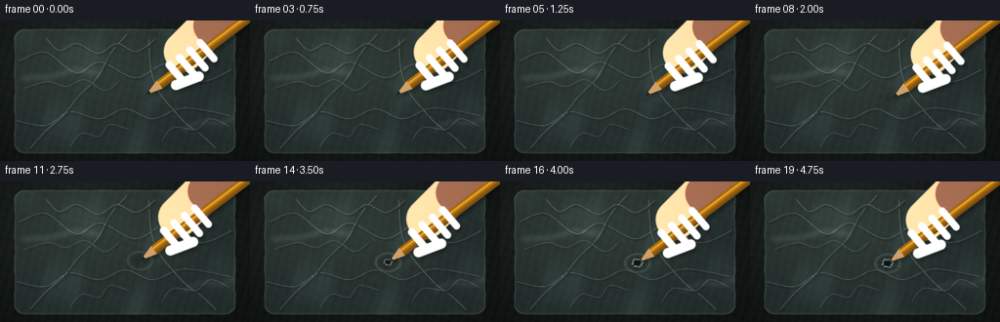
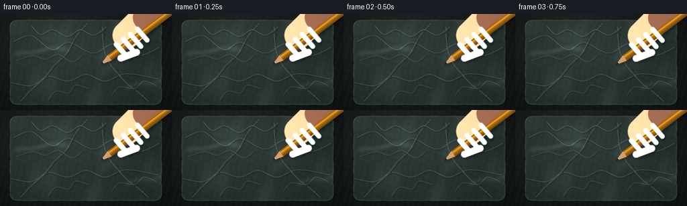
展开代码变化
--- 上一保存版本
+++ 本次保存版本
@@ -402,15 +402,18 @@
def point(a, b):
return tuple((origin + u * a + v * b).tolist())
- palm = (point(58, -16), point(119, -22), 24.0)
- wrist = (point(111, -18), point(188, -30), 22.0)
+ # The palm is behind the shaft; only the curled fingers cross in front.
+ palm = (point(58, -12), point(100, -18), 20.5)
+ wrist = (point(97, -16), point(176, -27), 19.0)
fingers = []
- for index, a in enumerate([40.0, 54.0, 68.0, 82.0]):
- # Fingers curl from the back of the hand across the pencil.
- p0 = point(a - 0.5, -10.5 + index * 0.4)
- p1 = point(a + 1.1, 11.2 - index * 0.6)
- fingers.append((p0, p1, 4.3 - index * 0.12, a))
- thumb = (point(47, 8.5), point(73, 15.0), 5.7)
+ for index, (a, reach) in enumerate(
+ [(38.0, 12.0), (51.0, 14.2), (64.0, 15.4), (77.0, 14.0)]
+ ):
+ # Separate tapered capsules with a little air between the knuckles.
+ p0 = point(a, -10.2 + index * 0.25)
+ p1 = point(a + 1.4, reach - index * 0.5)
+ fingers.append((p0, p1, 3.9 - index * 0.08, a))
+ thumb = (point(31, 10.5), point(55, 17.5), 5.2)
return palm, wrist, fingers, thumb, u, v, origin
@@ -425,7 +428,7 @@
return color, alpha
-def hand_layer(tip):
+def hand_layers(tip):
xx, yy = make_grid()
palm, wrist, fingers, thumb, u, v, origin = hand_parts(tip)
skin = rgb([0.73, 0.48, 0.36])
@@ -446,47 +449,50 @@
union = np.maximum(union, thumb_mask)
union = blur_mask(union, 0.30 * SS)
- # Use the same image as both a shadow source and the body layer.
- hand_rgba = np.zeros((HH, HW, 4), dtype=np.float32)
-
- def composite_part(mask, base_color, shadow_color, light=1.0):
- nonlocal hand_rgba
+ # Back and front are composited around the pencil to make the grip legible.
+ back_rgba = np.zeros((HH, HW, 4), dtype=np.float32)
+ front_rgba = np.zeros((HH, HW, 4), dtype=np.float32)
+
+ def make_part(mask, base_color, shadow_color, light=1.0):
color, alpha = shade_capsule(mask, base_color, shadow_color, light)
- # Global illumination from the upper-left.
- lighting = 0.90 + 0.10 * np.clip((180.0 - xx) / 130.0, -0.8, 0.8) + 0.08 * np.clip((90.0 - yy) / 90.0, -0.7, 0.7)
+ lighting = (
+ 0.91
+ + 0.09 * np.clip((180.0 - xx) / 130.0, -0.8, 0.8)
+ + 0.07 * np.clip((90.0 - yy) / 90.0, -0.7, 0.7)
+ )
color *= lighting[..., None]
- # Broad highlight across the upper side of each form.
highlight = np.exp(-(((xx - (tip[0] + 34.0)) / 47.0) ** 2 + ((yy - (tip[1] - 26.0)) / 33.0) ** 2))
color = mix(color, skin_light, (0.12 * highlight * alpha)[..., None])
- part = np.dstack([color, alpha[..., None]])
- hand_rgba = part + hand_rgba * (1.0 - alpha[..., None])
-
- composite_part(palm_mask, skin, skin_dark, 0.82)
- composite_part(wrist_mask, skin * 0.94, skin_dark, 0.70)
+ return np.dstack([color, alpha[..., None]])
+
+ def over(dst, src):
+ return src + dst * (1.0 - src[..., 3:4])
+
+ back_rgba = over(back_rgba, make_part(palm_mask, skin, skin_dark, 0.82))
+ back_rgba = over(back_rgba, make_part(wrist_mask, skin * 0.94, skin_dark, 0.70))
+
# Pinky to index, with small dark creases between adjacent fingers.
for index in range(len(fingers) - 1, -1, -1):
p0, p1, radius, a = fingers[index]
fm = finger_masks[index]
- composite_part(fm, skin_light * (0.94 + 0.015 * index), skin_dark, 0.90)
- # A crease on the palm side helps the fingers read separately.
+ front_rgba = over(front_rgba, make_part(fm, skin_light * (0.94 + 0.015 * index), skin_dark, 0.90))
crease = capsule_mask(xx, yy, p0, (p0[0] + (p1[0] - p0[0]) * 0.34, p0[1] + (p1[1] - p0[1]) * 0.34), radius * 0.65)
crease_alpha = crease * (0.11 + 0.02 * index)
dark = np.dstack([np.broadcast_to(skin_dark * 0.62, (HH, HW, 3)), crease_alpha[..., None]])
- hand_rgba = dark + hand_rgba * (1.0 - crease_alpha[..., None])
+ front_rgba = over(front_rgba, dark)
# Thumb lies along the near side and overlaps the index finger.
- composite_part(thumb_mask, skin_light, skin_dark, 1.0)
+ front_rgba = over(front_rgba, make_part(thumb_mask, skin_light, skin_dark, 1.0))
# Fingernails are low-contrast but important for reading the grip.
for index, (p0, p1, radius, a) in enumerate(fingers):
center = np.array(p1, dtype=np.float32)
- # Pull the nail slightly back from the fingertip.
center -= (np.array(p1) - np.array(p0)) * 0.12
angle = math.atan2(p1[1] - p0[1], p1[0] - p0[0])
nm = ellipse_mask(xx, yy, center, radius * 0.56, radius * 0.37, angle)
nail_color = nail * (0.95 + 0.02 * index)
nail_rgba = np.dstack([np.broadcast_to(nail_color, (HH, HW, 3)), (nm * 0.62)[..., None]])
- hand_rgba = nail_rgba + hand_rgba * (1.0 - (nm * 0.62)[..., None])
+ front_rgba = over(front_rgba, nail_rgba)
# Thumbnail.
thumb_dir = np.array(thumb[1]) - np.array(thumb[0])
@@ -494,14 +500,15 @@
thumb_angle = math.atan2(thumb_dir[1], thumb_dir[0])
tnm = ellipse_mask(xx, yy, tuple(thumb_center.tolist()), thumb[2] * 0.62, thumb[2] * 0.42, thumb_angle)
tn = np.dstack([np.broadcast_to(nail, (HH, HW, 3)), (tnm * 0.54)[..., None]])
- hand_rgba = tn + hand_rgba * (1.0 - (tnm * 0.54)[..., None])
+ front_rgba = over(front_rgba, tn)
# Subtle skin grain.
rng = np.random.default_rng(19)
noise = rng.normal(0.0, 1.0, (HH // 5, HW // 5)).astype(np.float32)
noise = np.asarray(Image.fromarray(np.clip(noise * 18 + 128, 0, 255).astype(np.uint8), "L").resize((HW, HH), Image.Resampling.BICUBIC), dtype=np.float32) / 255.0 - 0.5
- hand_rgba[..., :3] = np.clip(hand_rgba[..., :3] + noise[..., None] * 0.045 * hand_rgba[..., 3:4], 0.0, 1.0)
- return hand_rgba, union
+ for layer in (back_rgba, front_rgba):
+ layer[..., :3] = np.clip(layer[..., :3] + noise[..., None] * 0.045 * layer[..., 3:4], 0.0, 1.0)
+ return back_rgba, front_rgba, union
def render_pencil(tip, visible_start):
@@ -617,14 +624,15 @@
# Pencil and hand cast one soft shadow. The contact shadow is handled separately.
visible_start = 0.45 + 2.0 * puncture
pencil_rgba, pencil_cov = render_pencil(tip, visible_start)
- hand_rgba, hand_cov = hand_layer(tip)
+ hand_back, hand_front, hand_cov = hand_layers(tip)
union = np.maximum(pencil_cov, hand_cov)
shadow_mask = blur_mask(shift_array(union, int(2.3 * SS), int(3.1 * SS)), 1.7 * SS)
shadow_color = np.dstack([np.broadcast_to(rgb([0.008, 0.014, 0.013]), (HH, HW, 3)), (shadow_mask * 0.30)[..., None]])
image = composite_rgba(image, shadow_color)
+ image = composite_rgba(image, hand_back)
image = composite_rgba(image, pencil_rgba)
- image = composite_rgba(image, hand_rgba)
+ image = composite_rgba(image, hand_front)
image = draw_torn_rim(image, tip, puncture).convert("RGB")
return np.asarray(image.resize((WIDTH, HEIGHT), Image.Resampling.LANCZOS), dtype=np.uint8)
候选 03播放与检查图
点击播放 · 原生 RGB 像素
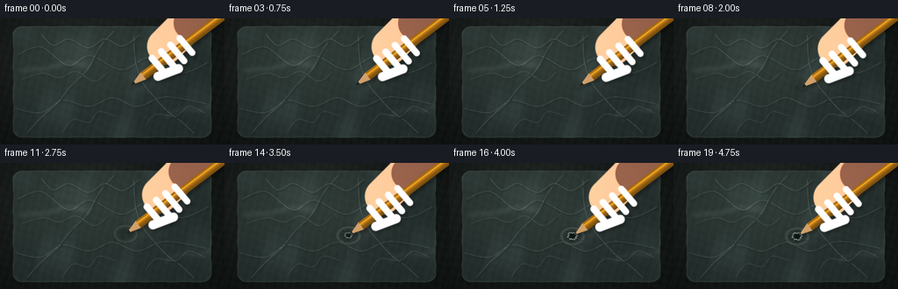
展开代码变化
--- 上一保存版本
+++ 本次保存版本
@@ -208,11 +208,11 @@
outside = blur_mask(outside, 1.4 * SS)
edge_soft = blur_mask(edge, 0.45 * SS)
base *= (1.0 - 0.18 * outside)[..., None]
- base = mix(base, rgb([0.73, 0.81, 0.78]), 0.20 * edge_soft[..., None])
+ base = mix(base, rgb([0.73, 0.81, 0.78]), 0.12 * edge_soft[..., None])
# A faint heat-sealed perimeter and small crimp marks.
seam = np.clip(1.0 - np.abs(sdf + 2.0) * SS, 0.0, 1.0) * mask
- base = mix(base, rgb([0.61, 0.69, 0.66]), 0.10 * seam[..., None])
+ base = mix(base, rgb([0.61, 0.69, 0.66]), 0.055 * seam[..., None])
return base, mask, sdf
@@ -234,8 +234,8 @@
for index, pts in enumerate(creases):
curve = smooth_polyline(pts)
strong = 1.0 if index < 5 else 0.72
- draw.line([(x + 1.0 * SS, y + 1.3 * SS) for x, y in curve], fill=(16, 27, 26, int(48 * strong)), width=int(2.1 * SS), joint="curve")
- draw.line([(x - 0.45 * SS, y - 0.55 * SS) for x, y in curve], fill=(222, 239, 233, int(68 * strong)), width=int(1.0 * SS), joint="curve")
+ draw.line([(x + 1.0 * SS, y + 1.3 * SS) for x, y in curve], fill=(16, 27, 26, int(32 * strong)), width=int(2.1 * SS), joint="curve")
+ draw.line([(x - 0.45 * SS, y - 0.55 * SS) for x, y in curve], fill=(222, 239, 233, int(46 * strong)), width=int(1.0 * SS), joint="curve")
# Loose secondary scratches catch the light without reading as fabric.
secondary = [
@@ -247,13 +247,13 @@
]
for pts in secondary:
curve = bezier(pts[0], pts[1], pts[2], pts[3])
- draw.line([(x * SS, y * SS) for x, y in curve], fill=(228, 243, 238, 38), width=max(1, int(0.55 * SS)))
+ draw.line([(x * SS, y * SS) for x, y in curve], fill=(228, 243, 238, 27), width=max(1, int(0.55 * SS)))
# Wide folded glints.
glint = Image.new("RGBA", (HW, HH), (0, 0, 0, 0))
gdraw = ImageDraw.Draw(glint)
- gdraw.line([(21 * SS, 59 * SS), (53 * SS, 57 * SS), (78 * SS, 50 * SS), (104 * SS, 54 * SS)], fill=(210, 235, 229, 24), width=9 * SS, joint="curve")
- gdraw.line([(186 * SS, 113 * SS), (205 * SS, 103 * SS), (226 * SS, 106 * SS), (242 * SS, 98 * SS)], fill=(224, 241, 236, 18), width=7 * SS, joint="curve")
+ gdraw.line([(21 * SS, 59 * SS), (53 * SS, 57 * SS), (78 * SS, 50 * SS), (104 * SS, 54 * SS)], fill=(210, 235, 229, 17), width=9 * SS, joint="curve")
+ gdraw.line([(186 * SS, 113 * SS), (205 * SS, 103 * SS), (226 * SS, 106 * SS), (242 * SS, 98 * SS)], fill=(224, 241, 236, 13), width=7 * SS, joint="curve")
glint = glint.filter(ImageFilter.GaussianBlur(2.4 * SS))
layer = Image.alpha_composite(glint, layer)
layer = layer.filter(ImageFilter.GaussianBlur(0.28 * SS))
@@ -431,8 +431,8 @@
def hand_layers(tip):
xx, yy = make_grid()
palm, wrist, fingers, thumb, u, v, origin = hand_parts(tip)
- skin = rgb([0.73, 0.48, 0.36])
- skin_light = rgb([0.88, 0.65, 0.49])
+ skin = rgb([0.67, 0.43, 0.33])
+ skin_light = rgb([0.79, 0.57, 0.43])
skin_dark = rgb([0.40, 0.23, 0.20])
nail = rgb([0.84, 0.62, 0.55])
@@ -475,14 +475,15 @@
for index in range(len(fingers) - 1, -1, -1):
p0, p1, radius, a = fingers[index]
fm = finger_masks[index]
- front_rgba = over(front_rgba, make_part(fm, skin_light * (0.94 + 0.015 * index), skin_dark, 0.90))
+ finger_skin = skin_light * (0.86 + 0.018 * index)
+ front_rgba = over(front_rgba, make_part(fm, finger_skin, skin_dark, 0.90))
crease = capsule_mask(xx, yy, p0, (p0[0] + (p1[0] - p0[0]) * 0.34, p0[1] + (p1[1] - p0[1]) * 0.34), radius * 0.65)
crease_alpha = crease * (0.11 + 0.02 * index)
dark = np.dstack([np.broadcast_to(skin_dark * 0.62, (HH, HW, 3)), crease_alpha[..., None]])
front_rgba = over(front_rgba, dark)
# Thumb lies along the near side and overlaps the index finger.
- front_rgba = over(front_rgba, make_part(thumb_mask, skin_light, skin_dark, 1.0))
+ front_rgba = over(front_rgba, make_part(thumb_mask, skin_light * 0.90, skin_dark, 1.0))
# Fingernails are low-contrast but important for reading the grip.
for index, (p0, p1, radius, a) in enumerate(fingers):
候选 04播放与检查图
点击播放 · 原生 RGB 像素
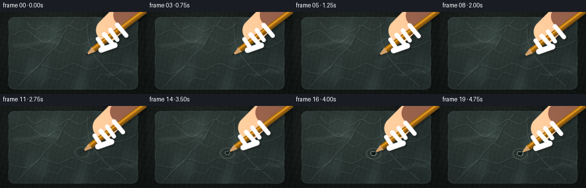
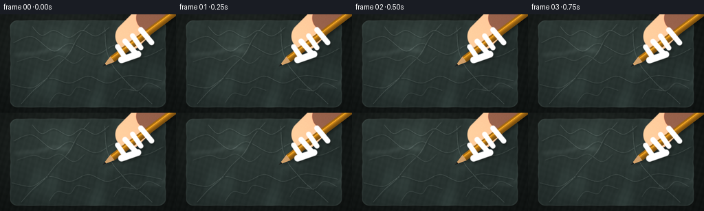
展开代码变化
--- 上一保存版本
+++ 本次保存版本
@@ -406,14 +406,14 @@
palm = (point(58, -12), point(100, -18), 20.5)
wrist = (point(97, -16), point(176, -27), 19.0)
fingers = []
- for index, (a, reach) in enumerate(
- [(38.0, 12.0), (51.0, 14.2), (64.0, 15.4), (77.0, 14.0)]
+ for index, (a, reach, drift) in enumerate(
+ [(35.0, 10.2, -1.0), (48.5, 14.8, 1.8), (62.0, 12.6, -0.8), (77.0, 16.4, 1.2)]
):
# Separate tapered capsules with a little air between the knuckles.
p0 = point(a, -10.2 + index * 0.25)
- p1 = point(a + 1.4, reach - index * 0.5)
- fingers.append((p0, p1, 3.9 - index * 0.08, a))
- thumb = (point(31, 10.5), point(55, 17.5), 5.2)
+ p1 = point(a + drift, reach - index * 0.5)
+ fingers.append((p0, p1, 3.65 + 0.24 * (index % 2), a))
+ thumb = (point(28, 8.8), point(52, 16.5), 4.9)
return palm, wrist, fingers, thumb, u, v, origin
可观测工具轨迹
实际执行的命令与返回图片。
命令 1exit 0
/bin/bash -c "pwd && rg --files -g 'prompt.txt' -g 'GENERATION_RULES.md' -g 'task_spec.json' -g '"'!node_modules'"'"
命令 2exit 0
/bin/bash -c "git status --short && find . -maxdepth 2 -type f -not -path './.git/*' -printf '%p\\n' | sort | head -200"
命令 3exit 0
/bin/bash -c 'cat GENERATION_RULES.md'
命令 4exit 0
/bin/bash -c 'cat prompt.txt'
命令 5exit 0
/bin/bash -c 'cat task_spec.json'
命令 6exit 0
/bin/bash -c "sed -n '1,240p' artifact_io.py && printf '\\n--- player ---\\n' && sed -n '1,240p' player_template.html"
命令 7exit 0
/bin/bash -c "python - <<'PY'
import PIL, numpy
print('Pillow', PIL.__version__)
print('numpy', numpy.__version__)
PY"命令 8exit 1
/bin/bash -c 'python generate.py'
命令 9exit 1
/bin/bash -c 'python generate.py'
命令 10exit 0
/bin/bash -c 'python generate.py'
命令 11exit 0
/bin/bash -c "python - <<'PY'
from PIL import Image
im=Image.open('frames/19.png')
im.resize((1024,576), Image.Resampling.NEAREST).save('frame19_big.png')
PY"命令 12exit 0
/bin/bash -c "python - <<'PY'
from PIL import Image
for i in (0,4,8,12,16,19):
Image.open(f'frames/{i:02d}.png').resize((1024,576), Image.Resampling.NEAREST).save(f'big_{i:02d}.png')
PY"命令 13exit 0
/bin/bash -c "rg -n '"'^def (hand_parts|shade_capsule|hand_layer|render_pencil|render_frame|contact_layers|tip_position)'"' generate.py"
命令 14exit 0
/bin/bash -c "pwd && rg --files -g 'prompt.txt' -g 'GENERATION_RULES.md' -g 'task_spec.json' -g 'artifact_io.py' -g '"'!node_modules'"'"
命令 15exit 0
/bin/bash -c "find . -maxdepth 2 -type f -not -path './.git/*' -printf '%p\\n' | sort | head -100"
命令 16exit 0
/bin/bash -c 'cat GENERATION_RULES.md'
命令 17exit 0
/bin/bash -c 'cat prompt.txt'
命令 18exit 0
/bin/bash -c 'cat task_spec.json'
命令 19exit 0
/bin/bash -c "sed -n '380,575p' generate.py"
命令 20exit 0
/bin/bash -c 'python generate.py'
命令 21exit 0
/bin/bash -c "python - <<'PY'
from PIL import Image
for i in (0,4,8,12,16,19):
Image.open(f'frames/{i:02d}.png').resize((1024,576), Image.Resampling.NEAREST).save(f'big_{i:02d}.png')
PY"命令 22exit 0
/bin/bash -c 'python generate.py'
命令 23exit 0
/bin/bash -c "python - <<'PY'
import json, numpy as np
from PIL import Image
spec=json.load(open('task_spec.json'))
z=np.load('pixels.npz')['pixels']
print('pixels', z.shape, z.dtype)
print('frames', len(sorted(__import__('pathlib').Path('frames').glob('*.png'))))
imgs=[np.asarray(Image.open(f'frames/{i:02d}.png')) for i in range(spec['frames'])]
print('png shapes', {x.shape for x in imgs})
print('changed pixels consecutive', [int(np.any(imgs[i]"'!=imgs[i-1],axis=2).sum()) for i in range(1,len(imgs))])
print('"'nonblank', all(x.std()>5 for x in imgs))
print('first/last mean abs diff', float(np.abs(imgs[0].astype(float)-imgs[-1].astype(float)).mean()))
PY"命令 24exit 0
/bin/bash -c "python - <<'PY'
from PIL import Image
for i in (0,10,19):
Image.open(f'frames/{i:02d}.png').resize((1024,576), Image.Resampling.NEAREST).save(f'check_{i:02d}.png')
PY"命令 25exit 0
/bin/bash -c 'python generate.py'
命令 26exit 0
/bin/bash -c "python - <<'PY'
from pathlib import Path
import json, numpy as np
from PIL import Image
spec=json.loads(Path('task_spec.json').read_text())
expected=(spec['frames'],spec['height'],spec['width'],3)
frames=[np.asarray(Image.open(Path('frames')/f'{i:02d}.png')) for i in range(spec['frames'])]
assert all(f.shape==expected[1:] for f in frames)
assert all(f.dtype==np.uint8 for f in frames)
assert all(np.std(f)>1 for f in frames)
packed=np.load('pixels.npz')['pixels']
assert packed.shape==(spec['height'],spec['width'],spec['frames'])
print('validated', len(frames), 'frames', frames[0].shape, 'fps', spec['fps'], 'duration', spec['frames']/spec['fps'])
print('artifacts', [p.name for p in sorted(Path('.').iterdir()) if p.name in {'index.html','pixels.npz','inspection.png','transition_check.png'}])
PY
git status --short -- generate.py frames index.html pixels.npz inspection.png transition_check.png"命令 27exit 0
/bin/bash -c 'python -m py_compile generate.py && ls -lh generate.py index.html pixels.npz inspection.png transition_check.png frames/19.png'
视觉工具实际返回图片 1

视觉工具实际返回图片 2
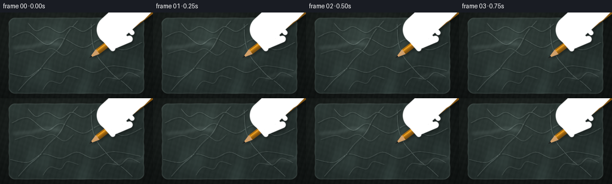
视觉工具实际返回图片 3

视觉工具实际返回图片 4
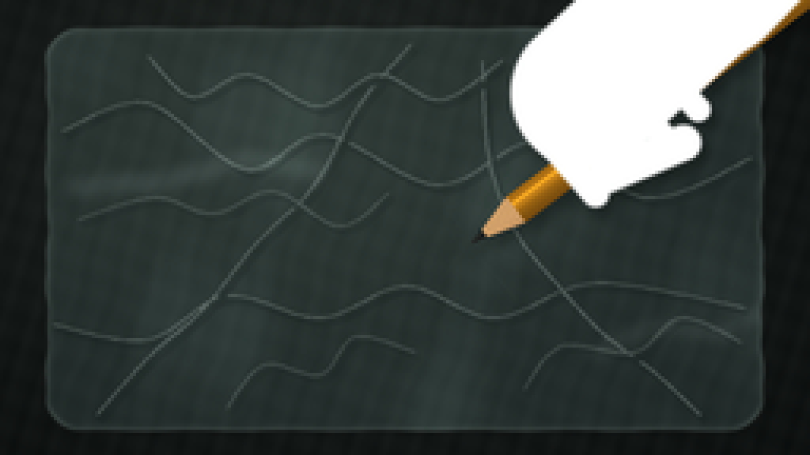
视觉工具实际返回图片 5
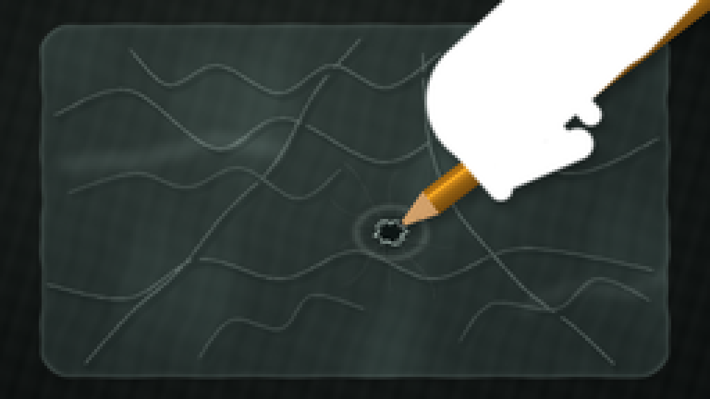
视觉工具实际返回图片 6

视觉工具实际返回图片 7
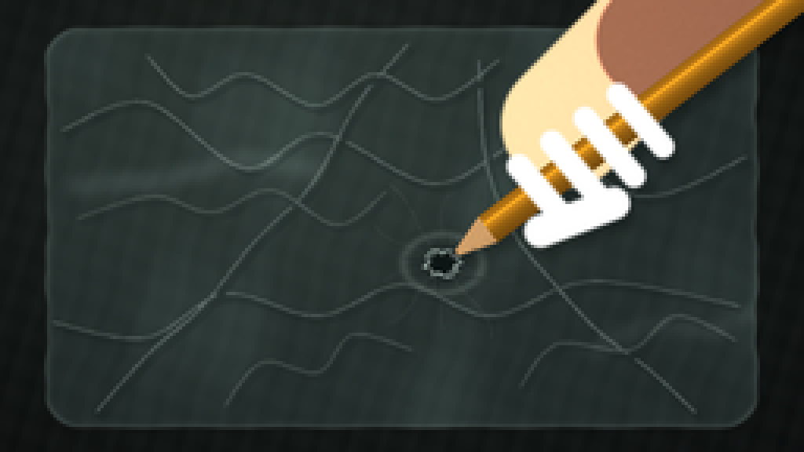
视觉工具实际返回图片 8

视觉工具实际返回图片 9
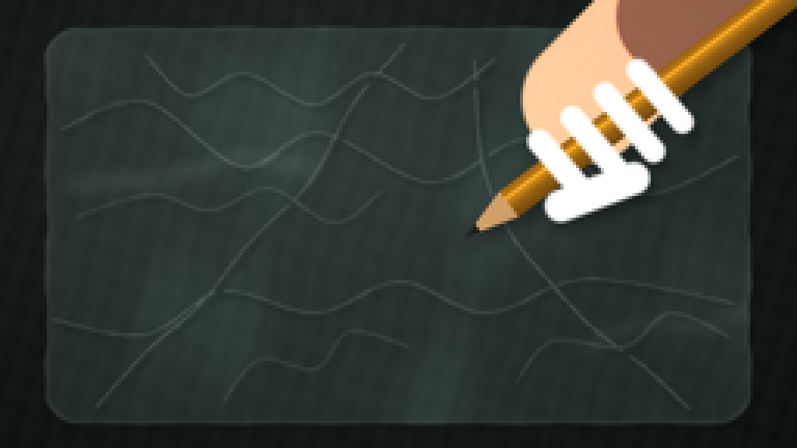
视觉工具实际返回图片 10
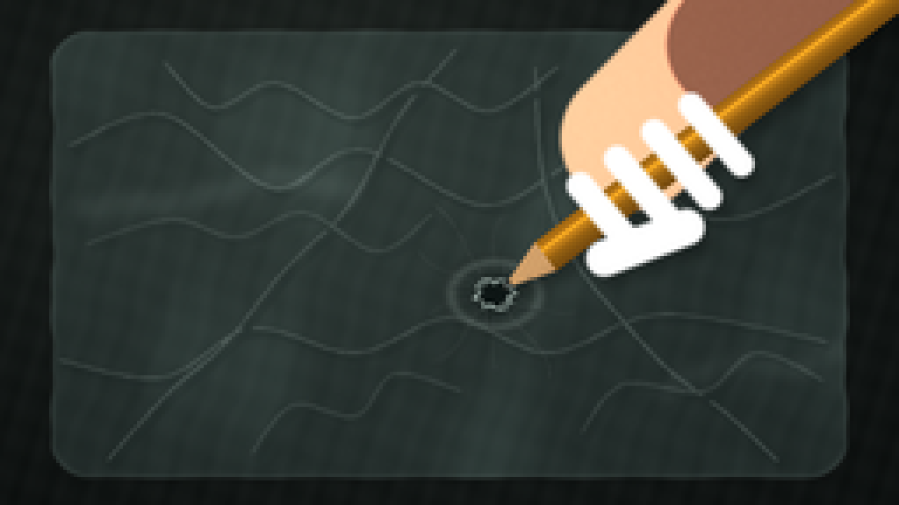
视觉工具实际返回图片 11

保存候选 4 份；完成命令 27 次；可验证图片返回 11 张。原始 API 响应与完整日志保留在本地。